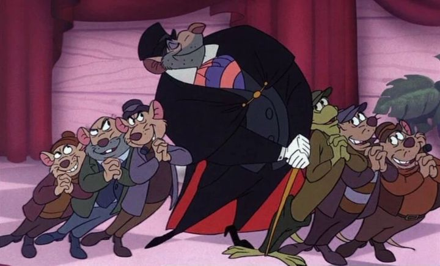

Disclaimer: This is a review of the 1986 animated film "The Great Mouse Detective," also released under titles such as "The Adventures of the Great Mouse Detective" and "Basil the Great Mouse Detective."Disney was in a transitional period in the 1980's, leaving behind their lower-budget, fun movies in favor of more serious and attention worthy stories. But after "The Fox and the Hound" and "The Black Cauldron," there was one more movie that harkened back to that era of the 60's and 70's. "The Great Mouse Detective" was released in 1986, and it's one of the most fun and exciting of Disney's movies. It's also one of my personal childhood favorites. As you might expect, this is an adaption of the classic Sherlock Holmes character. But taking a cue from Disney's "The Rescuers" and "Robin Hood," this is about anthropomorphic mice who live alongside the human world, having their own adventures. In this case, the brilliant English detective is a mouse named Basil, who is tasked with solving a case brought by Olivia of her kidnapped father, and Dr. Dawson, a kind mouse that escorted her. Basil immediately recognizes the situation as part of an evil plan by his nemisis, Professor Ratigan. Unbeknownst to them, Ratigan is scheming to steal the English crown for himself on the Queen's diamon jubilee, and Olivia's father, a talented toy and puppet maker, is key to his plans. The names might not be as you remember them. Where's Sherlock? Watson? Moriarty? Clearly, they're all here, just under different names. I assumed it was a copyright issue, but "The Great Mouse Detective" is actually based on a series of children's books where Basil is the mouse detective's name. As expected, Basil gets his name from the popular Sherlock actor Basil Rathbone, and there are other clever nods, like how Basil lives in the basement of 221 Baker Street (while human Sherlock lives upstairs), and utilizes Sherlock dog Toby in his adventures. Perhaps as expected for a family movie based on Holmes, there's a fun mystery to solve (Basil finding where the father is being held, which the audience is made aware of early), but this is primarily an action adventure. It's smart, but not too smart, and is easy for children to follow. The mystery takes the trio through a variety of situations, requiring disguises, deducing, and quick-thinking. There are bar fights and squabbles and exciting chases. The heroes aren't immune to the pain, and get knocked around just as often as the bad guys, and like any violent cartoon, we get a lot of silly smashed-and-seeing-stars faces. And this time, the camera in particular is dynamic, moving all over to get the best dramatic shots for the action. This was Disney's most exciting film yet, and it still holds up great toady for kids with short attention-spans.  Helping sell the adventure is the fun voice acting. Everyone has a "well, I say" sort of British accent, and the delivery carefully treads the line between too over the top and just right. Basil, played by Barrie Ingham, is spot on. And did I mention THE Vincent Price plays the villain Ratigan? He's deliciously evil in the role, a theatrical madman who doesn't dare let anyone call him a rat, less he feed you to his massive pet cat (which he does, in a dark introduction I haven't seen since Captain Hook in "Peter Pan"). This is one of my favorite acting ensembles in any Disney movie. The only minor issue is that the visuals don't quite match the energetic performances. The animation does, with excellent character animation, but the visuals are just a slight upgrade from movies like "Robin Hood" and "The Aristocats." There are a few ambitious moments though, especially the climatic final scene that takes place on the gears inside the Big Ben clock, a fantastic sequence that uses early CGI to great effect. The main musical theme is memorable and one of my favorite themes for Sherlock, and there are a few vocal songs in the mix, the most classic being the ode to Ratigan, "The World's Greatest Criminal Mind." "The Great Mouse Detective" is, as it should, remembered fondly by those who saw it as children. It might not be an "important" classic like "The Fox and the Hound" or "The Rescuers," but it's still the most fun you can have with a Disney movie.
- "Ani" More reviews can be found at : https://2danicritic.github.io/ Previous review: review_The_Girl_Without_Hands Next review: review_The_Great_Passage